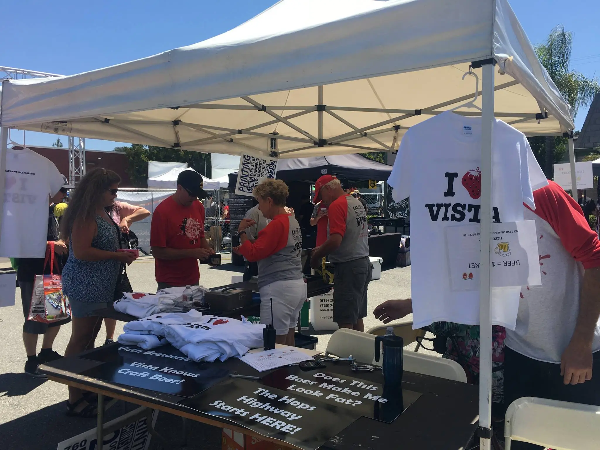
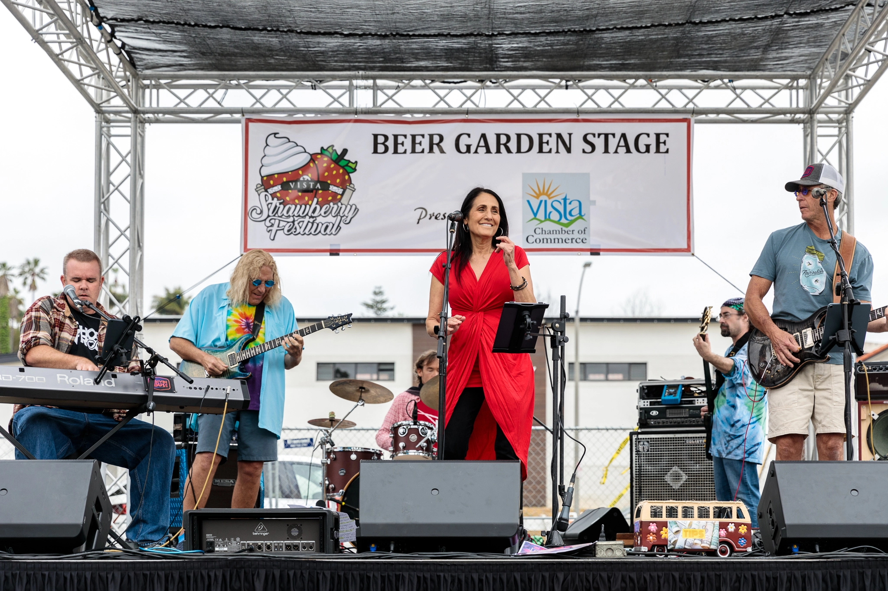

In 2022, Vista, CA had a population of 98.4k, the 5 largest ethnic groups in Vista, CA are White (Non-Hispanic) (37.4%), White (Hispanic) (19.7%), Two+ (Hispanic) (19%), Other (Hispanic) (9.06%), and Asian (Non-Hispanic) (4.78%)
Upcoming Events
20th Annual Festival of the Arts: October 25 from 10 AM - 4 PM, Downtown Vista, 134-100 S Indiana Ave.
Zane Lamprey Stand Up Comedy Tour: October 26 frin 8:00 PM - 9:30 PM, Mother Earth Brew Co., 2055 Thibodo Rd Suite E.
Vista Farmers Market: October 27, from 8 AM - 12 PM, Vista Farmers Market, 325 S Melrose Dr
Local Atractions
Vista Village: Immerse your shopping senses in a unique blend of specialty retailers and restaurants.
Guajome County Park: Campground is home to a lake, pond & marsh, plus a playground, trails & a historic adobe house.
Wave Waterpark: Park with a pool, water slide, simulated wave attraction & lazy river plus an area for small kids.
Community Calendar
Date
Event
May 25, 2025
Vista Strawberry Festival
July 5, 2024
Summer Concert Series
Every Saturday
Farmers Market
Discover About Us
Welcome to Neri Discount AlignmentCouncil from Vista City giving a talk

Show your pride with our Vista shirts!Our Strawberries and shirts at the news!

Rocking in the Vista Strawberry FestivalA victory celebration at the Santee Sports Complex